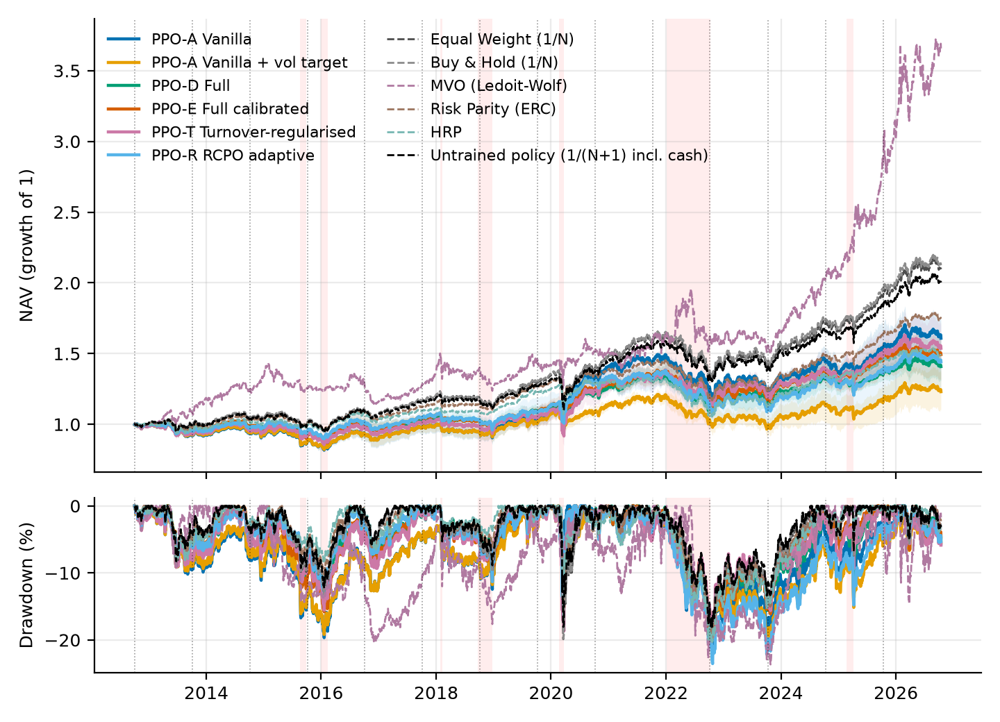
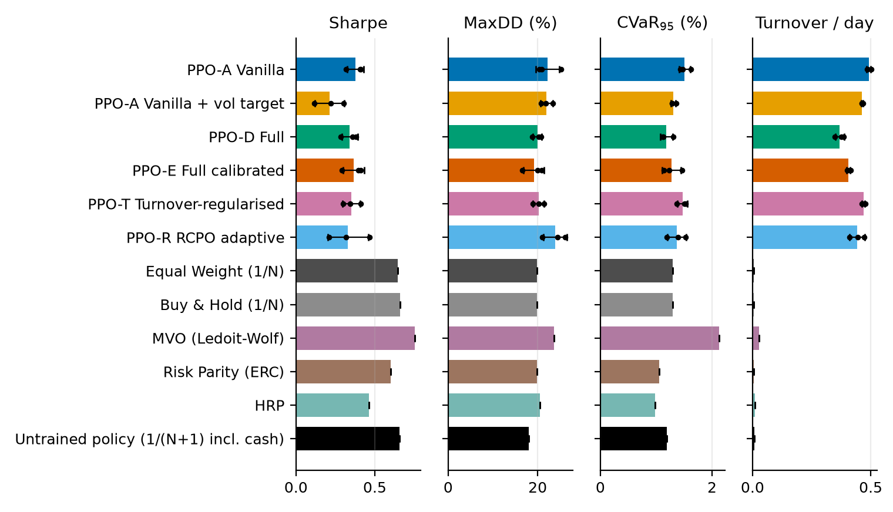
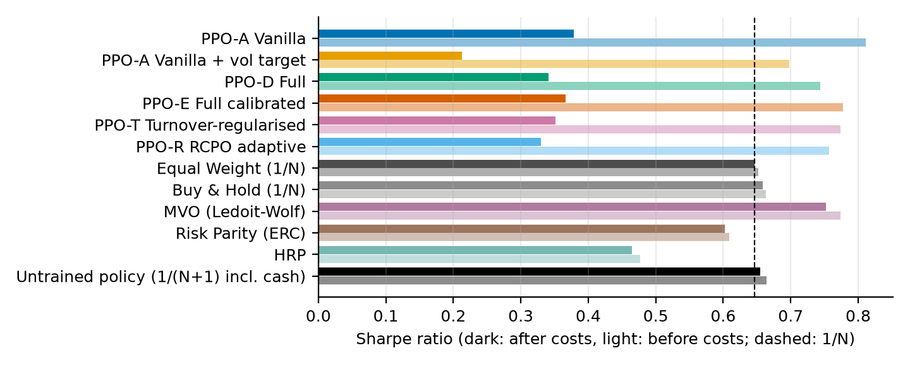
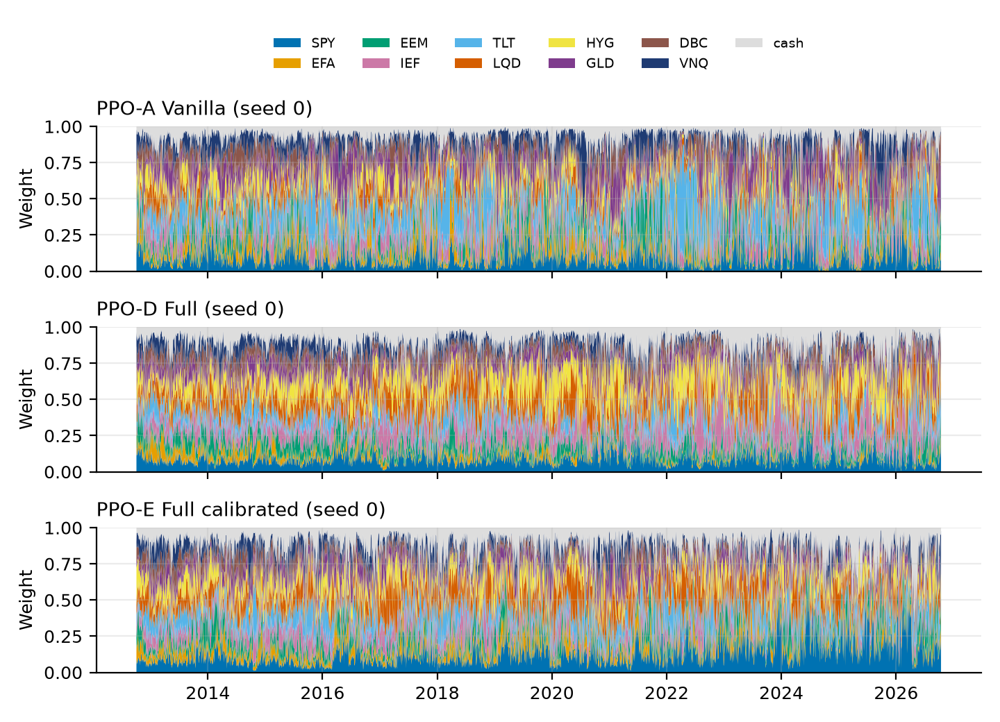
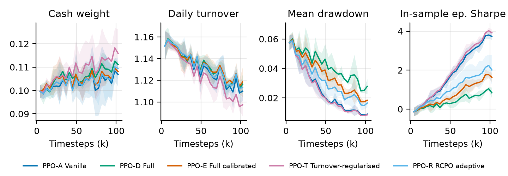
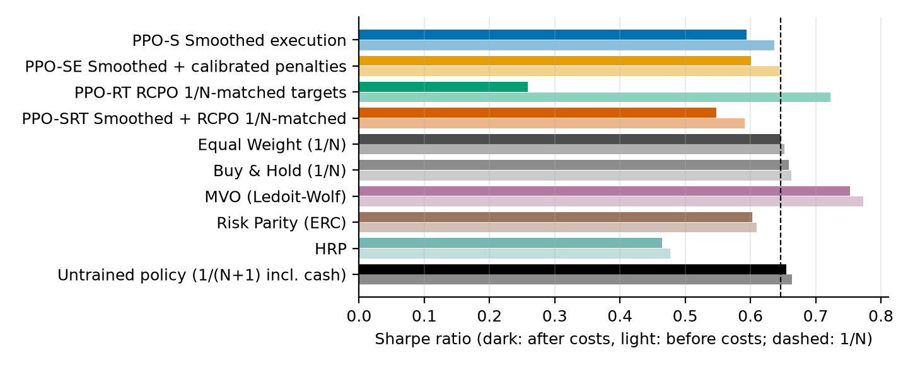
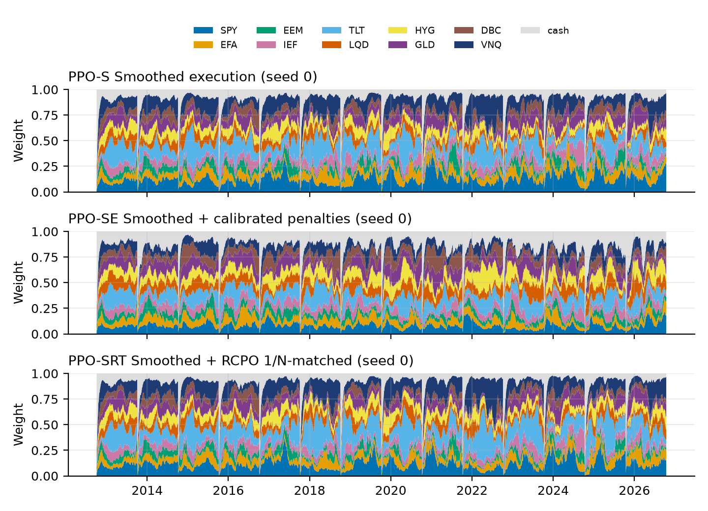
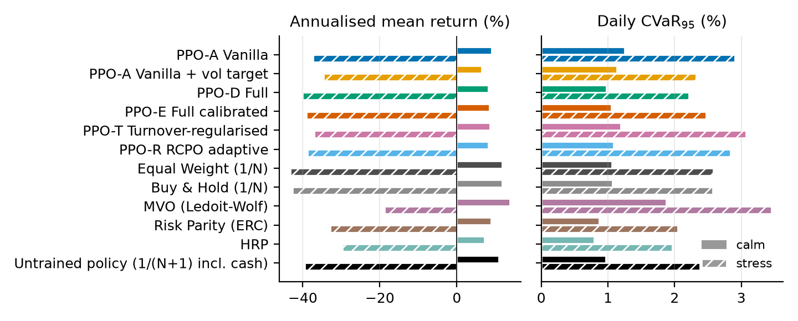
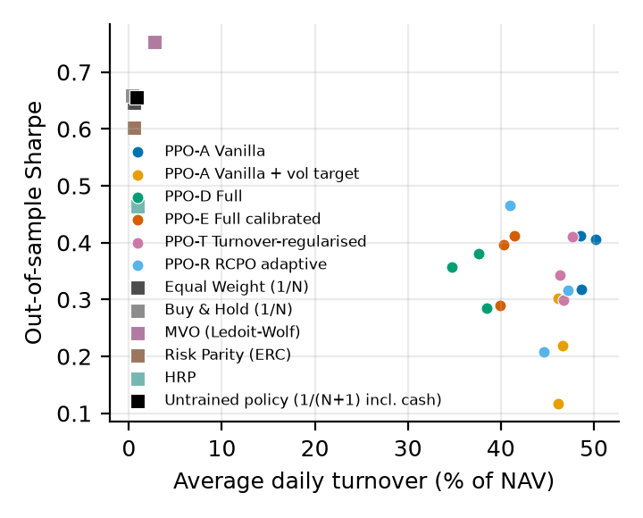

<title>Risk-Bounded DRL Allocation</title>
<meta name="description" content="Research paper: CVaR and drawdown penalised PPO for dynamic portfolio allocation under transaction costs and square-root market impact, with walk-forward ablation.">
<link rel="preconnect" href="https://fonts.googleapis.com">
<link rel="preconnect" href="https://fonts.gstatic.com" crossorigin>
<link rel="stylesheet" href="https://fonts.googleapis.com/css2?family=Source+Serif+4:ital,opsz,wght@0,8..60,400;0,8..60,600;0,8..60,700;1,8..60,400&family=IBM+Plex+Sans:wght@400;500;600&family=IBM+Plex+Mono:wght@400;500&display=swap">
<script>
window.MathJax = {
  tex: { inlineMath: [["\\(", "\\)"]], displayMath: [["\\[", "\\]"]], tags: "ams" },
  svg: { fontCache: "global" },
  options: { skipHtmlTags: ["script", "noscript", "style", "textarea", "pre", "code"] }
};
</script>
<script src="https://cdnjs.cloudflare.com/ajax/libs/mathjax/3.2.2/es5/tex-svg.js" async></script>
<style>
/* Layout: a single reading column (~68ch) for prose; figures and tables may widen to 960px. */
:root {
  --paper: #FAFBFC;
  --ink: #18212B;
  --muted: #5B6673;
  --rule: #D6DCE3;
  --accent: #1D5B86;
  --accent-soft: #EAF1F7;
  --panel: #FFFFFF;
  --good: #1E7A4C;
  --bad: #A23B2A;
  --serif: "Source Serif 4", "Source Serif Pro", Georgia, "Times New Roman", serif;
  --sans: "IBM Plex Sans", "Helvetica Neue", Arial, sans-serif;
  --mono: "IBM Plex Mono", Menlo, Consolas, monospace;
  --measure: 68ch;
  --wide: 960px;
}
@media (prefers-color-scheme: dark) {
  :root:not([data-theme="light"]) {
    --paper: #12171D; --ink: #E2E7ED; --muted: #9AA5B1; --rule: #2B343E; --accent: #86BCE3;
    --accent-soft: #1A2733; --panel: #F7F8FA; --good: #6CC79A; --bad: #E58C7C; color-scheme: dark;
  }
}
:root[data-theme="dark"] {
  --paper: #12171D; --ink: #E2E7ED; --muted: #9AA5B1; --rule: #2B343E; --accent: #86BCE3;
  --accent-soft: #1A2733; --panel: #F7F8FA; --good: #6CC79A; --bad: #E58C7C; color-scheme: dark;
}
body { background: var(--paper); color: var(--ink); font-family: var(--serif); font-size: 17px; line-height: 1.6; }
.page { max-width: var(--wide); margin: 0 auto; padding-inline: 20px; padding-block: 40px 80px; }
.page > * { max-width: var(--measure); margin-inline: auto; }
.page > figure, .page > .wide { max-width: var(--wide); }
h1, h2, h3, h4 { font-family: var(--sans); text-wrap: balance; line-height: 1.25; color: var(--ink); }
h1 { font-size: clamp(1.6rem, 3.4vw, 2.2rem); font-weight: 600; margin-block: 0 0.6em; letter-spacing: -0.01em; }
h2 { font-size: 1.32rem; font-weight: 600; margin-block: 2.4em 0.6em; padding-top: 0.6em; border-top: 1px solid var(--rule); }
h3 { font-size: 1.06rem; font-weight: 600; margin-block: 1.8em 0.4em; }
h2 .sec, h3 .sec { color: var(--accent); margin-right: 0.45em; font-variant-numeric: tabular-nums; }
p { margin-block: 0 1em; }
a { color: var(--accent); text-underline-offset: 2px; }
a:focus-visible { outline: 2px solid var(--accent); outline-offset: 2px; }
.kicker { font-family: var(--sans); font-size: 0.78rem; letter-spacing: 0.09em; text-transform: uppercase; color: var(--accent); margin-bottom: 0.8em; }
.author { font-family: var(--sans); font-size: 1.05rem; font-weight: 500; color: var(--ink); margin-bottom: 0.35em; }
.byline { font-family: var(--sans); font-size: 0.9rem; color: var(--muted); margin-bottom: 2em; }
.abstract { border-left: 3px solid var(--accent); background: var(--accent-soft); padding: 1em 1.2em; margin-block: 1.4em 1.2em; }
.abstract h2 { border: 0; margin: 0 0 0.4em; padding: 0; font-size: 0.82rem; letter-spacing: 0.09em; text-transform: uppercase; color: var(--accent); }
.abstract p:last-child { margin-bottom: 0; }
.keywords { font-family: var(--sans); font-size: 0.86rem; color: var(--muted); }
.keywords b { color: var(--ink); font-weight: 500; }
nav.toc { font-family: var(--sans); font-size: 0.9rem; border: 1px solid var(--rule); padding: 0.9em 1.2em; margin-block: 1.6em; }
nav.toc h2 { border: 0; margin: 0 0 0.4em; padding: 0; font-size: 0.8rem; text-transform: uppercase; letter-spacing: 0.09em; color: var(--muted); }
nav.toc ol { margin: 0; padding-left: 1.3em; columns: 2 14rem; column-gap: 2rem; }
nav.toc li { break-inside: avoid; margin-block: 0.15em; }
.contrib { padding-left: 1.2em; }
.contrib li { margin-block: 0.35em; }
.callout { font-family: var(--sans); font-size: 0.93rem; border: 1px solid var(--rule); border-left: 3px solid var(--accent); padding: 0.8em 1em; margin-block: 1.2em; }
.callout b { color: var(--accent); }
.eq { overflow-x: auto; overflow-y: hidden; margin-block: 0.4em 1em; }
figure { margin-block: 1.8em; margin-inline: auto; }
figure.fig img { display: block; width: 100%; height: auto; background: var(--panel); border: 1px solid var(--rule); border-radius: 2px; }
figcaption { font-family: var(--sans); font-size: 0.86rem; color: var(--muted); line-height: 1.5; margin-top: 0.6em; }
figure.table figcaption { margin: 0 0 0.6em; }
figcaption b { color: var(--ink); font-weight: 600; }
.scroll { overflow-x: auto; }
table { border-collapse: collapse; width: 100%; font-family: var(--sans); font-size: 0.82rem; font-variant-numeric: tabular-nums; }
thead th { text-align: left; font-weight: 600; border-bottom: 1.5px solid var(--ink); padding: 0.45em 0.6em; vertical-align: bottom; line-height: 1.3; }
tbody td { padding: 0.38em 0.6em; border-bottom: 1px solid var(--rule); vertical-align: top; }
tbody tr:last-child td { border-bottom: 1.5px solid var(--ink); }
tr.group-start td { border-top: 1.5px solid var(--muted); }
th.num, td.num { text-align: right; white-space: nowrap; }
td .lam { color: var(--muted); font-size: 0.9em; white-space: nowrap; }
td .pm { color: var(--muted); font-size: 0.88em; }
.table-note { font-family: var(--sans); font-size: 0.8rem; color: var(--muted); margin-top: 0.5em; }
code, .mono { font-family: var(--mono); font-size: 0.86em; }
pre { font-family: var(--mono); font-size: 0.82rem; background: var(--accent-soft); padding: 0.9em 1em; overflow-x: auto; line-height: 1.5; }
ol.refs { font-size: 0.9rem; padding-left: 2.2em; }
ol.refs li { margin-block: 0.35em; }
.finding { display: grid; grid-template-columns: 2.2em 1fr; gap: 0.2em 0.6em; margin-block: 0.8em; }
.finding .n { font-family: var(--sans); font-weight: 600; color: var(--accent); }
.finding p { margin: 0; min-width: 0; }
mjx-container[display="true"] { margin: 0.6em 0 !important; }
@media (max-width: 560px) { body { font-size: 16px; } .page { padding-inline: 16px; } }
@media (prefers-reduced-motion: reduce) { * { scroll-behavior: auto !important; } }
</style>

<main class="page">
<div class="kicker">Technical report · Quantitative finance · Reinforcement learning</div>
<h1>Risk-Bounded Deep Reinforcement Learning for Dynamic Portfolio Allocation under Tail-Risk and Market Impact</h1>
<div class="author">Deborshi Vikramaditya Chakravorty</div>
<div class="byline">Draft for review · October 2026 · Code, configuration and every reported number are produced by the accompanying repository (§10)</div>

<section class="abstract">
<h2>Abstract</h2>
<p>Deep reinforcement learning (DRL) allocators trained to maximise return have no explicit incentive to avoid tail losses, and the usual remedy is to subtract tail-risk penalties from the reward. We test that remedy under conditions designed to be hard to fool. The simulator charges commission, half-spread, and temporary and permanent square-root market impact; evaluation is strictly walk-forward; every configuration is trained on three seeds; and every strategy runs through the same simulator. The main study allocates across ten liquid multi-asset ETFs over 14 annual out-of-sample folds (October 2012 to October 2026). It covers 27 PPO training chains: return-only rewards, fixed CVaR and drawdown penalties at two scales, a turnover penalty, RCPO with adaptive multipliers (loose and 1/N-matched targets), and partial-adjustment execution. These are compared with a volatility-targeting overlay, five classical baselines and an untrained-policy control. A controlled study on a simulated regime-switching market (45 further agents) supplies ground-truth regimes and a selection-free robustness check.</p>
<p>With direct execution of target weights, no PPO variant beats equal weighting after costs. Sharpe ratios are 0.33–0.38, against 0.65 for 1/N, and five of six configurations are significantly worse. Before costs, however, the agents beat 1/N (gross Sharpe 0.74–0.81). The edge comes from short-horizon timing rather than static tilts, but harvesting it takes 37–49% daily turnover, which costs 3.2–4.5% of NAV a year. Smoothing execution, so that each day closes 10% of the gap to the target, cuts turnover by about 90% and raises net Sharpe by about 0.2 (p = 0.006 for the penalised variant), bringing PPO to statistical parity with 1/N. It also removes the timing edge. With smoothing and calibrated penalties, the agent has the lowest maximum drawdown of all strategies (16.9%), yet 1/N de-levered to the same exposure matches it. RCPO with 1/N-matched targets binds but lowers performance, and no agent learns to de-risk when risk rises. The most striking result concerns the network's starting point. The untrained policy, which allocates equally across every asset and cash, matches or beats every trained agent on risk-adjusted return in both datasets (Sharpe 0.66 on ETFs, 1.38 on the simulated market). On the simulated market, additional training lowers out-of-sample performance while in-sample performance keeps rising; on ETFs, in-sample Sharpe reaches about 4 against 0.38 out of sample. Gradient updates mostly add turnover and fit the training window, and only a weak timing signal survives on real data. Tail-risk penalties help mainly by keeping the policy close to its prior. Under realistic frictions, execution design governs net performance more than tail-risk shaping does, and tail-risk penalties mainly move the agent towards a de-levered, diversified portfolio.</p>
</section>
<p class="keywords"><b>Keywords:</b> deep reinforcement learning; proximal policy optimization; conditional value-at-risk; drawdown control; constrained RL; market impact; transaction costs; walk-forward validation; portfolio allocation</p>

<nav class="toc" aria-label="Contents">
<h2>Contents</h2>
<ol>
<li><a href="#s1">Introduction</a></li>
<li><a href="#s2">Related work</a></li>
<li><a href="#s3">Problem formulation</a></li>
<li><a href="#s4">Empirical setup</a></li>
<li><a href="#s5">Results on market data</a></li>
<li><a href="#s6">Controlled study</a></li>
<li><a href="#s7">Discussion</a></li>
<li><a href="#s8">Limitations</a></li>
<li><a href="#s9">Conclusion</a></li>
<li><a href="#s10">Reproducibility</a></li>
<li><a href="#refs">References</a></li>
<li><a href="#appendix">Appendix</a></li>
</ol>
</nav>

<h2 id="s1"><span class="sec">1</span>Introduction</h2>
<p>Classical portfolio construction solves a static problem. Mean-variance optimisation <a href="#r1">[1]</a> and its descendants choose weights from estimated moments and rebalance periodically. Estimation error in expected returns is large enough that the naive 1/N rule is hard to beat out of sample <a href="#r4">[4]</a>. Practitioners therefore lean on shrinkage <a href="#r5">[5]</a> and on risk-based allocations, such as equal risk contribution <a href="#r6">[6]</a> and hierarchical risk parity <a href="#r8">[8]</a>, which avoid expected returns altogether.</p>
<p>Deep reinforcement learning offers a state-dependent, non-linear allocation policy trained end to end on net performance <a href="#r12">[12]</a><a href="#r13">[13]</a><a href="#r14">[14]</a><a href="#r15">[15]</a><a href="#r16">[16]</a><a href="#r17">[17]</a>. Most such agents maximise expected (log) return or a Sharpe-type objective, and nothing in those objectives separates a smooth return stream from one that earns a premium by bearing tail risk. The concern motivating this paper is that, without an explicit tail-risk term, a policy-gradient agent may adopt concentrated, high-exposure allocations that look good on average and then lose heavily when the market changes regime.</p>
<p>The standard responses have limitations. Post-hoc overlays (stop-losses, volatility targeting <a href="#r45">[45]</a>) act outside the learning loop. Variance penalties are symmetric and ignore path dependence. Constrained and risk-sensitive RL offers principled alternatives (constrained MDPs <a href="#r24">[24]</a>, CVaR policy gradients <a href="#r20">[20]</a><a href="#r21">[21]</a>, CPO <a href="#r22">[22]</a>, RCPO <a href="#r23">[23]</a>), but these are rarely tested in portfolio settings that also charge realistic frictions, retrain under walk-forward validation, and repeat training over seeds.</p>
<p>We study the most widely used member of this family: per-step reward penalties on the agent's own rolling CVaR and drawdown,</p>
<div class="eq">\[ R_t = \log(1+r_t) - \lambda_1\,\widehat{\mathrm{CVaR}}_{\alpha,t} - \lambda_2\,D_t^2 , \]</div>
<p>both with fixed multipliers and with RCPO-style adaptive multipliers. We embed it in a simulator with commission, half-spread and square-root market impact <a href="#r25">[25]</a><a href="#r26">[26]</a><a href="#r27">[27]</a>, and we ask:</p>
<div class="callout"><b>Research question.</b> Under realistic frictions and strictly out-of-sample evaluation, do tail-risk reward penalties make PPO allocation agents safer or better, relative to an unpenalised agent, a post-hoc risk overlay, and classical allocation rules?</div>
<p>Our contributions are:</p>
<ol class="contrib">
<li><b>A tested, open framework</b> for friction-aware DRL allocation. Its Gymnasium environment has unit-tested cost accounting: an exact NAV identity, a closed-form commission check, |q|<sup>3/2</sup> impact scaling and no look-ahead. It includes fixed, turnover and adaptive (RCPO) penalties, a volatility-targeting overlay and five classical baselines.</li>
<li><b>A market-data study</b> on ten liquid ETFs over 14 walk-forward folds (3,527 daily test returns spanning 2015–16, 2018, COVID-19, 2022 and the 2025 tariff shock). It uses three seeds per design, warm-started retraining, no validation-based checkpoint selection, paired block-bootstrap inference and a decomposition of the pre-cost edge into timing and static tilts.</li>
<li><b>A follow-up</b> on the same data testing fixes for both weaknesses found: partial-adjustment execution, which is optimal under trading costs in the Gârleanu–Pedersen framework <a href="#r46">[46]</a>, and RCPO with targets matched to the 1/N portfolio's risk (12 chains). It includes paired tests against the original variants and an exposure-matched 1/N control.</li>
<li><b>A controlled study</b> on a simulated regime-switching market with ground-truth regimes: a 2×2 penalty ablation plus a calibrated variant (45 agents), a selection-free checkpoint analysis and an untrained-policy control.</li>
<li><b>Findings</b> that substantially qualify the motivating hypothesis (§5–§7). The agents learn a real but untradeable timing signal. Smoothing makes them competitive with 1/N but gives up that signal. Penalties and binding constraints reduce risk only as much as de-levering does, and no agent learns to manage risk dynamically.</li>
</ol>
<div class="callout"><b>The prior matters more than the training.</b> PPO's softmax policy with a cash logit starts by allocating equally across all assets and cash, effectively a regularised equal-weight-plus-cash portfolio. In both datasets this untrained starting point matches or beats every trained agent on risk-adjusted return. Training moves the policy away from it mainly by adding turnover and fitting noise in the training window (§6.2, §7.3). Many design choices in DRL allocation, including tail-risk penalties, are best understood by how far they let the policy drift from this prior.</div>
<p>We make no theoretical stability claim: fixed-multiplier penalties carry no general guarantee of bounded tail risk, and we treat their effect as an empirical question.</p>
<h2 id="s2"><span class="sec">2</span>Related work</h2>
<h3><span class="sec">2.1</span>Classical portfolio construction</h3>
<p>Markowitz <a href="#r1">[1]</a> formalised the mean-variance trade-off; Black and Litterman <a href="#r2">[2]</a> stabilised it by blending equilibrium returns with views; the Kelly criterion <a href="#r3">[3]</a> maximises expected log growth, the same quantity that forms the return term of our reward. DeMiguel, Garlappi and Uppal <a href="#r4">[4]</a> showed that the gains from optimisation are typically consumed by estimation error, making 1/N a demanding benchmark. Ledoit–Wolf shrinkage <a href="#r5">[5]</a> regularises the covariance matrix; risk-based allocations, namely equal risk contribution (ERC) <a href="#r6">[6]</a><a href="#r7">[7]</a> and hierarchical risk parity (HRP) <a href="#r8">[8]</a>, sidestep expected-return estimation. Coherent risk measures <a href="#r11">[11]</a> and the linear-programming representation of CVaR <a href="#r9">[9]</a><a href="#r10">[10]</a> made tail-risk optimisation tractable, and drawdown-constrained allocation has a long history of its own <a href="#r36">[36]</a><a href="#r37">[37]</a>. Volatility-managed portfolios scale exposure inversely to recent variance <a href="#r45">[45]</a>; we use such an overlay as the post-hoc risk-management comparison.</p>
<h3><span class="sec">2.2</span>Reinforcement learning for trading and allocation</h3>
<p>Moody et al. <a href="#r12">[12]</a> and Moody and Saffell <a href="#r13">[13]</a> trained trading systems by direct reinforcement on the differential Sharpe ratio. Deep architectures followed: recurrent direct-reinforcement agents <a href="#r15">[15]</a>, the ensemble-of-identical-independent-evaluators portfolio network of Jiang et al. <a href="#r14">[14]</a>, and actor-critic agents across futures markets <a href="#r16">[16]</a>. Libraries such as FinRL <a href="#r17">[17]</a> standardised environments built on PPO <a href="#r18">[18]</a>. Typical evaluations use proportional costs only, a single chronological split and a single training seed, despite evidence that deep-RL results vary strongly across seeds <a href="#r31">[31]</a><a href="#r32">[32]</a>.</p>
<h3><span class="sec">2.3</span>Risk-sensitive and constrained reinforcement learning</h3>
<p>Constrained MDPs <a href="#r24">[24]</a> add expected-cost constraints to the return objective. Chow et al. <a href="#r21">[21]</a> derived policy-gradient and actor-critic algorithms for CVaR-constrained MDPs; Tamar et al. <a href="#r20">[20]</a> estimated CVaR gradients by sampling; CPO <a href="#r22">[22]</a> enforces constraints with trust-region updates and RCPO <a href="#r23">[23]</a> adapts Lagrange multipliers on a slower timescale. Deep hedging <a href="#r41">[41]</a> trains networks to minimise convex risk measures (including CVaR) of hedged P&amp;L under frictions. Our formulation sits at the simple end of this spectrum: the multipliers are fixed hyper-parameters and the CVaR is a rolling empirical estimate on realised returns rather than a distributional quantity of the return-to-go. That simplicity is what most applied DRL portfolio studies use, which is why we test it.</p>
<h3><span class="sec">2.4</span>Transaction costs and market impact</h3>
<p>Almgren and Chriss <a href="#r25">[25]</a> separated temporary from permanent impact in optimal execution. Empirical work supports a concave, approximately square-root dependence of impact on trade size relative to volume <a href="#r26">[26]</a><a href="#r27">[27]</a>. We adopt square-root forms for both components, scaled by daily volatility.</p>
<h3><span class="sec">2.5</span>Evaluation methodology</h3>
<p>Backtest overfitting inflates Sharpe ratios when many configurations are tried <a href="#r33">[33]</a>. Robust Sharpe-difference testing requires accounting for serial dependence and correlation between strategies <a href="#r30">[30]</a>, which we do with a paired circular block bootstrap <a href="#r29">[29]</a>. In RL, Henderson et al. <a href="#r31">[31]</a> and Agarwal et al. <a href="#r32">[32]</a> argue for multiple seeds and interval estimates rather than single-run point estimates.</p>

<h2 id="s3"><span class="sec">3</span>Problem formulation</h2>
<h3><span class="sec">3.1</span>Markov decision process</h3>
<p>Time is indexed by trading days \(t\). The investor holds \(N\) risky assets and cash, with net asset value \(\mathrm{NAV}_t\), share holdings \(h_t\in\mathbb R^N\) and close prices \(P_t\). Decisions are taken at the close of \(t\) using information available at the close of \(t\).</p>
<p><b>State.</b> The observation is</p>
<div class="eq">\[ s_t = \big(\,X_{t-L+1:t},\; w^-_t,\; w^{\text{cash}}_t,\; D_t,\; \hat\sigma^{p}_t\,\big), \qquad X\in\mathbb R^{L\times N\times F}, \]</div>
<p>where \(X\) holds \(F=20\) causally normalised features per asset over a window of \(L=20\) days (§4.3), \(w^-_t\) are the current (drifted) weights, \(D_t = 1-\mathrm{NAV}_t/\max_{\tau\le t}\mathrm{NAV}_\tau\) is the running drawdown, and \(\hat\sigma^p_t\) is the 21-day realised volatility of the portfolio. Every observation entry is clipped to \([-10,10]\); the observation has \(LNF + N + 3\) dimensions (2,008 for five assets, 4,013 for ten).</p>
<p><b>Action.</b> The policy outputs \(a_t\in[-1,1]^{N+1}\). Target weights are a temperature-scaled softmax with an explicit cash logit,</p>
<div class="eq">\[ (w_t, w^{\text{cash}}_t) = \operatorname{softmax}(\kappa\, a_t),\qquad \kappa = 3,\qquad w_{i,t}\ge 0,\; \textstyle\sum_i w_{i,t}\le 1 , \]</div>
<p>so the agent is long-only and fully funded, and can de-risk continuously into cash. (The framework also implements Euclidean projections onto the capped simplex and onto the L1 ball for long/short books; they are not used here.)</p>
<p><b>Transition.</b> Prices and volumes follow the exogenous market process; the agent affects its own book only through costs and the permanent-impact state defined next.</p>

<h3><span class="sec">3.2</span>Execution and friction-adjusted returns</h3>
<p>Let \(q_{i,t}\) be the signed dollar notional traded in asset \(i\). Trades are sized against the <em>post-cost</em> NAV \(\widetilde{\mathrm{NAV}}_t\), found by a short fixed-point iteration, so that post-trade weights equal the target and costs are not financed by implicit borrowing. A participation cap limits each trade to a fraction \(\rho\) of average daily dollar volume:</p>
<div class="eq">\[ q_{i,t} = \operatorname{clip}\!\big(w_{i,t}\,\widetilde{\mathrm{NAV}}_t - h_{i,t}P_{i,t},\; -\rho\,\mathrm{ADV}_{i,t},\; \rho\,\mathrm{ADV}_{i,t}\big). \]</div>
<p>With \(\sigma_{i,t}\) the 20-day daily return volatility and \(\mathrm{ADV}_{i,t}\) the 20-day mean dollar volume (both causal), the per-unit square-root impact of the trade is</p>
<div class="eq">\[ I_{i,t} = \sigma_{i,t}\left(\frac{|q_{i,t}|}{\mathrm{ADV}_{i,t}}\right)^{1/2} = \sigma_{i,t}\left(\frac{|\Delta w_{i,t}|\,\mathrm{NAV}_t}{\mathrm{ADV}_{i,t}}\right)^{1/2}, \]</div>
<p>and the dollar cost of the rebalance is</p>
<div class="eq">\[ C_t = \sum_{i=1}^{N}\Big[\underbrace{(c+s)\,|q_{i,t}|}_{\text{commission + half-spread}} + \underbrace{\eta\, I_{i,t}\,|q_{i,t}|}_{\text{temporary}} + \underbrace{\tfrac12\gamma\, I_{i,t}\,|q_{i,t}|}_{\text{permanent, own trade}} + \underbrace{\psi_{i,t}\, q_{i,t}}_{\text{residual displacement}}\Big]. \]</div>
<p>Permanent impact is modelled as a per-asset price-displacement state that each trade pushes in its own direction and that decays with half-life \(h\):</p>
<div class="eq">\[ \psi_{i,t+1} = \delta\big(\psi_{i,t} + \gamma\, I_{i,t}\operatorname{sign}(q_{i,t})\big),\qquad \delta = 2^{-1/h}. \]</div>
<p>A trade pays the average displacement it creates (\(\tfrac12\gamma I|q|\)) plus any displacement left by earlier trades (\(\psi q\), which is a rebate when trading against one's own past impact). Positions are marked at the historical, un-impacted close, so impact never creates paper gains; a buy-then-sell round trip on a flat price path always loses money, as verified in the test suite. The accounting identities are</p>
<div class="eq">\[ \mathrm{NAV}^{+}_t = \mathrm{NAV}_t - C_t,\qquad \mathrm{NAV}_{t+1} = \text{cash}^{+}_t + h^{+\top}_t P_{t+1},\qquad r_t = \frac{\mathrm{NAV}_{t+1}}{\mathrm{NAV}_t} - 1 . \]</div>
<p>Parameters: \(c = 1\) bp, \(s = 2\) bp, \(\eta = 0.15\), \(\gamma = 0.05\), \(h = 5\) days, \(\rho = 10\%\), initial NAV $10m.</p>
<p><b>Smoothed execution (follow-up variants).</b> Optionally, the weights actually traded towards are a partial adjustment from the current weights \(w^-_t\) towards the policy's target \(w^\star_t\), with a no-trade band \(b\):</p>
<div class="eq">\[ \tilde w_t = w^-_t + \kappa_{\mathrm{tr}}\,(w^\star_t - w^-_t),\qquad \tilde w_t \leftarrow w^-_t \ \text{ if } \ \lVert \tilde w_t - w^-_t\rVert_1 < b , \]</div>
<p>with \(\kappa_{\mathrm{tr}} = 0.1\) and \(b = 1\%\). Under quadratic trading costs, Gârleanu and Pedersen <a href="#r46">[46]</a> show that optimal trading moves a constant fraction of the way towards an aim portfolio. Here the policy supplies the aim and the environment applies a fixed trading speed.</p>

<h3><span class="sec">3.3</span>Tail-risk measures</h3>
<p>For losses \(\ell = -r\), the value-at-risk at level \(\alpha\) is the \(\alpha\)-quantile of \(\ell\), and the conditional value-at-risk is the expected loss in the worst \(1-\alpha\) tail <a href="#r43">[43]</a>. We use the Rockafellar–Uryasev representation <a href="#r9">[9]</a><a href="#r10">[10]</a>, which is exact for empirical distributions, including fractional tail atoms:</p>
<div class="eq">\[ \mathrm{CVaR}_\alpha(\ell) = \min_{v\in\mathbb R}\Big\{ v + \tfrac{1}{1-\alpha}\,\mathbb E\big[(\ell - v)^+\big]\Big\},\qquad \widehat{\mathrm{CVaR}}_{\alpha,t} = \widehat{\mathrm{VaR}}_{\alpha,t} + \frac{1}{(1-\alpha)W}\sum_{k=0}^{W-1}\big(\ell_{t-k} - \widehat{\mathrm{VaR}}_{\alpha,t}\big)^+ , \]</div>
<p>with \(\alpha = 0.95\), a rolling window of \(W = 63\) realised returns, the lower empirical quantile for \(\widehat{\mathrm{VaR}}\), and at least 20 observations before the penalty switches on.</p>

<h3><span class="sec">3.4</span>Risk-penalised reward and objective</h3>
<p>The reward is</p>
<div class="eq">\[ R_t = k\cdot\operatorname{clip}_{[-10/k,\,10/k]}\Big( \log(1+r_t) \;-\; \lambda_1\big[\widehat{\mathrm{CVaR}}_{\alpha,t}\big]^+ \;-\; \lambda_2\, D_{t+1}^2 \;-\; \lambda_3\, \mathrm{TO}_t \Big),\qquad k = 100, \]</div>
<p>where \(\mathrm{TO}_t = \sum_i |q_{i,t}|/\mathrm{NAV}_t\) is one-way turnover; \(\lambda_3 = 0\) except in the turnover-regularised variant.</p>
<p>and PPO maximises \(J(\pi) = \mathbb E_\pi\big[\sum_t \gamma^t R_t\big]\). The CVaR estimate is floored at zero so that windows with no losses earn no bonus. Inputs are sanitised so that \(R_t\) stays finite for returns of −100% or worse (possible for short books) and for non-finite inputs; this is covered by unit tests.</p>
<p><b>Interpretation.</b> \(J\) is the Lagrangian of a constrained MDP whose constraints bound the discounted averages of rolling CVaR and of squared drawdown, evaluated at fixed multipliers \((\lambda_1,\lambda_2)\). Two consequences matter for what follows. First, nothing adapts the multipliers, so there is no target risk level; the penalties shift the optimum along the return/risk frontier by an amount that depends on their scale. Second, the CVaR term depends on 63 days of the agent's own returns, which the state summarises only through \(D_t\) and \(\hat\sigma^p_t\); the reward is therefore not Markov in \(s_t\), and the critic must learn a partially observed quantity.</p>
<p><b>Scale.</b> In daily data the return term is small. For an invested book with 20% annual volatility, \(\mathbb E[\log(1+r_t)]\approx 3\times10^{-4}\) while the 95% daily CVaR is roughly \(2.5\times10^{-2}\). At \(\lambda_1 = 1\) the CVaR penalty therefore exceeds the expected return term by about two orders of magnitude. The ablation grid in the experimental brief uses \(\lambda\in\{0,1\}\); we run it as specified and add a variant E with multipliers scaled to daily magnitudes, \((\lambda_1,\lambda_2) = (0.05, 0.5)\).</p>

<h3><span class="sec">3.5</span>Adaptive multipliers (RCPO)</h3>
<p>To give the constraints a target level rather than a fixed price, variant R adapts the multipliers on a slower timescale than the policy, in the manner of reward-constrained policy optimisation <a href="#r23">[23]</a>. After each PPO rollout, the average constraint costs observed in that rollout, \(\bar c_1\) (daily CVaR) and \(\bar c_2\) (squared drawdown), are compared with targets \(\tau_1, \tau_2\), and the multipliers take a projected ascent step on the Lagrangian:</p>
<div class="eq">\[ \lambda_k \leftarrow \operatorname{clip}\!\Big(\lambda_k + \eta_\lambda\,\frac{\bar c_k - \tau_k}{\tau_k},\; 0,\; \lambda_{\max}\Big),\qquad k\in\{1,2\}. \]</div>
<p>The updated multipliers are pushed into every environment's reward and carried across warm-started folds.</p>

<h3><span class="sec">3.6</span>Policy architecture</h3>
<p>The flat observation is unpacked into the feature window and the portfolio state. Each asset's \(L\times F\) history passes through the same causal temporal convolutional encoder <a href="#r38">[38]</a> (two dilated layers, kernel 3, dilations 1 and 2, width 32, a 1×1 residual path, GELU, LayerNorm), and the last time step is read out. A learned asset-identity embedding is added, and one pre-norm transformer block <a href="#r39">[39]</a> (4 heads) mixes information across assets. The asset embeddings are concatenated with an MLP embedding of the portfolio state and fused into a 128-dimensional feature vector shared by a Gaussian actor (state-independent log-std, initialised at −0.5) and a critic, each with hidden layers [128, 64] and tanh activations:</p>
<div class="eq">\[ e_i = \mathrm{TCN}(X_{\cdot,i,\cdot}) + u_i,\quad E = \mathrm{TransformerBlock}([e_1,\dots,e_N]),\quad z_t = \mathrm{MLP}\big([\operatorname{vec}(E);\ \mathrm{MLP}(p_t)]\big). \]</div>
<p>The causal TCN's receptive field is 7 days. Longer horizons enter through the 21- and 63-day features rather than through the encoder.</p>

<h3><span class="sec">3.7</span>Optimisation</h3>
<p>Agents are trained with PPO <a href="#r18">[18]</a> and generalised advantage estimation <a href="#r19">[19]</a> in Stable-Baselines3 <a href="#r44">[44]</a>, using the hyper-parameters in [[tab:tab-hparams]]. Rewards are normalised by a running estimate of the discounted-return scale; observations are not, because the features are already z-scores. Training episodes are 252 days long, start at random dates inside the training window, and begin from an all-cash book.</p>

<h2 id="s4"><span class="sec">4</span>Empirical setup</h2>
<h3><span class="sec">4.1</span>Market data</h3>
<p>The main study uses ten liquid U.S.-listed ETFs covering the major asset classes: U.S., developed ex-U.S. and emerging equities (SPY, EFA, EEM); intermediate and long Treasuries (IEF, TLT); investment-grade and high-yield credit (LQD, HYG); gold (GLD); broad commodities (DBC); and U.S. real estate (VNQ). Daily open, high, low, close and volume come from Yahoo Finance, adjusted for splits and distributions so that close-to-close returns are total returns. The sample runs from 11 April 2007 (HYG's first trading day, the first date with all ten assets) to 14 October 2026: 4,910 trading days with no gaps or zero-volume days. The raw file is not redistributed; <code>scripts/download_data.py</code> rebuilds it and records its provenance.</p>
<figure class="table" id="tab-etf"><figcaption><b>Table §.</b> The ETF universe, April 2007 – October 2026 (4,910 days). Daily log returns, annualised. "Stress" days fall in the named episodes of [[tab:tab-episodes]].</figcaption>
<div class="scroll"><table>
<thead><tr><th>ETF</th><th>Asset class</th><th class="num">Ann. mean (%)</th><th class="num">Ann. vol (%)</th><th class="num">Vol, calm (%)</th><th class="num">Vol, stress (%)</th><th class="num">Skew</th><th class="num">Excess kurt.</th><th class="num">Worst day (%)</th><th class="num">Mean ADV ($bn)</th></tr></thead>
<tbody>
<tr><td>SPY</td><td>U.S. equity</td><td class="num">10.43</td><td class="num">19.63</td><td class="num">14.75</td><td class="num">33.94</td><td class="num">−0.29</td><td class="num">13.95</td><td class="num">−11.59</td><td class="num">24.27</td></tr>
<tr><td>EFA</td><td>Developed ex-U.S. equity</td><td class="num">4.41</td><td class="num">21.65</td><td class="num">16.69</td><td class="num">36.69</td><td class="num">−0.34</td><td class="num">13.24</td><td class="num">−11.84</td><td class="num">1.03</td></tr>
<tr><td>EEM</td><td>Emerging equity</td><td class="num">4.49</td><td class="num">27.91</td><td class="num">20.76</td><td class="num">49.14</td><td class="num">0.05</td><td class="num">16.27</td><td class="num">−17.63</td><td class="num">1.80</td></tr>
<tr><td>IEF</td><td>7–10y Treasuries</td><td class="num">2.98</td><td class="num">6.94</td><td class="num">6.25</td><td class="num">9.56</td><td class="num">0.11</td><td class="num">2.57</td><td class="num">−2.54</td><td class="num">0.34</td></tr>
<tr><td>TLT</td><td>20y+ Treasuries</td><td class="num">2.60</td><td class="num">15.08</td><td class="num">13.67</td><td class="num">20.52</td><td class="num">0.01</td><td class="num">3.17</td><td class="num">−6.90</td><td class="num">1.25</td></tr>
<tr><td>LQD</td><td>IG corporate credit</td><td class="num">3.77</td><td class="num">8.81</td><td class="num">6.48</td><td class="num">15.73</td><td class="num">−0.44</td><td class="num">56.47</td><td class="num">−9.55</td><td class="num">0.94</td></tr>
<tr><td>HYG</td><td>High-yield credit</td><td class="num">4.64</td><td class="num">10.79</td><td class="num">7.80</td><td class="num">19.38</td><td class="num">0.32</td><td class="num">40.21</td><td class="num">−8.44</td><td class="num">1.06</td></tr>
<tr><td>GLD</td><td>Gold</td><td class="num">8.85</td><td class="num">18.22</td><td class="num">16.64</td><td class="num">24.42</td><td class="num">−0.42</td><td class="num">7.00</td><td class="num">−10.84</td><td class="num">1.64</td></tr>
<tr><td>DBC</td><td>Commodities</td><td class="num">2.46</td><td class="num">19.33</td><td class="num">16.57</td><td class="num">29.02</td><td class="num">−0.50</td><td class="num">3.39</td><td class="num">−8.28</td><td class="num">0.04</td></tr>
<tr><td>VNQ</td><td>U.S. real estate</td><td class="num">4.84</td><td class="num">29.56</td><td class="num">21.82</td><td class="num">52.30</td><td class="num">−0.52</td><td class="num">18.00</td><td class="num">−21.71</td><td class="num">0.23</td></tr>
</tbody></table></div>
<p class="table-note">Average pairwise correlation 0.27 on calm days and 0.21 on stress days; SPY–TLT correlation −0.24 calm and −0.42 stress (flight to quality).</p></figure>
<p><b>Stress episodes.</b> Real data has no ground-truth regimes. For the regime-conditional analysis we label days that fall in ten widely recognised stress episodes, fixed before any results were inspected and listed in [[tab:tab-episodes]]. They cover 17.3% of the sample and 11.1% of out-of-sample days. No strategy ever observes these labels.</p>
<figure class="table" id="tab-episodes"><figcaption><b>Table §.</b> Named stress episodes used to label regimes (inclusive dates; S&amp;P 500 peak to trough unless noted).</figcaption>
<div class="scroll"><table><thead><tr><th>Episode</th><th>From</th><th>To</th><th>In test period?</th></tr></thead><tbody>
<tr><td>Global financial crisis</td><td>2007-10-09</td><td>2009-03-09</td><td>no (training only)</td></tr>
<tr><td>Flash crash / euro sovereign stress</td><td>2010-04-23</td><td>2010-07-02</td><td>no</td></tr>
<tr><td>U.S. downgrade / euro crisis</td><td>2011-07-22</td><td>2011-10-03</td><td>no</td></tr>
<tr><td>China devaluation sell-off</td><td>2015-08-18</td><td>2015-09-29</td><td>yes</td></tr>
<tr><td>Oil / China sell-off</td><td>2015-12-29</td><td>2016-02-11</td><td>yes</td></tr>
<tr><td>Volatility shock</td><td>2018-01-26</td><td>2018-02-08</td><td>yes</td></tr>
<tr><td>Q4 2018 sell-off</td><td>2018-09-21</td><td>2018-12-24</td><td>yes</td></tr>
<tr><td>COVID-19 crash</td><td>2020-02-19</td><td>2020-03-23</td><td>yes</td></tr>
<tr><td>2022 inflation / rates bear market (stocks and bonds)</td><td>2022-01-03</td><td>2022-10-12</td><td>yes</td></tr>
<tr><td>2025 tariff shock</td><td>2025-02-19</td><td>2025-04-08</td><td>yes</td></tr>
</tbody></table></div></figure>

<h3><span class="sec">4.2</span>Simulated market (controlled study)</h3>
<p>The controlled study uses a simulated market that provides what real data cannot: ground-truth regimes and many independent fat-tailed stress episodes. A two-state Markov regime in the spirit of Hamilton <a href="#r40">[40]</a> drives the market: calm turns to stress with probability 0.008 per day, and stress persists with probability 0.97. Five assets follow a one-factor model with unit-variance Student-t innovations (ν = 4). In stress, volatility rises 2.5-fold, factor loadings rise from 0.55 to 0.85, and drift falls to −35% a year. Each asset also carries a weak, persistent latent alpha (AR(1) with coefficient 0.97, scale 0.06 daily standard deviations). The sample is 3,000 days with 18 stress episodes covering 16.6% of days. Full descriptive statistics are in the appendix ([[tab:tab-syn-data]]).</p>

<h3><span class="sec">4.3</span>Features</h3>
<p>For each asset and window \(w\in\{5,21,63\}\) we compute log momentum, realised volatility, distance from the moving average, log relative volume, and two order-flow-imbalance proxies: bulk-volume classification <a href="#r28">[28]</a> (signed volume \(V_t(2\Phi(r_t/\sigma_t)-1)\) over the window, divided by total volume) and close-location-value-weighted volume. Two single-day features complete the set (the one-day return and the log high/low range), giving \(F = 20\). Every feature is z-scored with a rolling 252-day mean and standard deviation using data up to and including \(t\), then clipped to ±5. Because every transform is causal, one feature tensor serves all folds; a unit test confirms that perturbing prices after \(t\) leaves every feature at or before \(t\) unchanged.</p>

<h3><span class="sec">4.4</span>Walk-forward protocols</h3>
<p><b>Market data.</b> We use 14 rolling, end-anchored folds, each with a 1,008-day (four-year) training window, a 5-day embargo and a 252-day test window. The concatenated test windows form one contiguous track of 3,527 daily returns from 2 October 2012 to 14 October 2026 (fold calendar in [[tab:tab-fold-cal]]). Retraining from scratch 14 times per agent was not affordable, so each (variant, seed) is trained as a chain. Fold 0 trains from scratch for 102,400 steps; each later fold fine-tunes the previous fold's model on its own training window for 28,672 steps (budgets rounded up to whole PPO rollouts). Only data before each test window is ever used for training. <em>Each fold is evaluated with its final model, with no checkpoint selection</em>, because the controlled study showed that validation-based selection interacts with the penalties (§6.2).</p>
<p><b>Simulated data.</b> We use three rolling folds (1,008-day training, 252-day test, 5-day embargo). Every (variant, seed, fold) agent trains from scratch for 150,000 steps, and the checkpoint with the best reward on the last 15% of the training window is kept. A separate analysis re-evaluates every agent at fixed budgets with no selection.</p>

<h3><span class="sec">4.5</span>Strategies compared</h3>
<p><b>PPO variants</b> share every hyper-parameter ([[tab:tab-hparams]]) and differ only in the reward:</p>
<ul>
<li><b>A</b>: return only (λ₁ = λ₂ = 0), the vanilla baseline;</li>
<li><b>B</b>: CVaR only (λ₁ = 1);</li>
<li><b>C</b>: drawdown only (λ₂ = 1);</li>
<li><b>D</b>: CVaR and drawdown (λ₁ = λ₂ = 1);</li>
<li><b>E</b>: calibrated CVaR and drawdown (λ₁ = 0.05, λ₂ = 0.5);</li>
<li><b>T</b>: return plus a turnover penalty of 10 bp per unit of one-way turnover (λ₃ = 0.001), about three times the realised cost;</li>
<li><b>R</b>: RCPO, with adaptive multipliers targeting an average daily CVaR<sub>95</sub> of 1.5% and an average squared drawdown of 0.005 (RMS drawdown of about 7%), step size 0.2 and multipliers capped at 5.</li>
</ul>
<p><b>Follow-up variants</b> (ETF data only, same protocol):</p>
<ul>
<li><b>S</b>: vanilla reward with smoothed execution (\(\kappa_{\mathrm{tr}}=0.1\), \(b=1\%\));</li>
<li><b>SE</b>: smoothed execution with E's calibrated penalties;</li>
<li><b>RT</b>: RCPO whose targets, in each fold, equal the 1/N portfolio's average rolling daily CVaR<sub>95</sub> and average squared drawdown over 252-day blocks of that fold's training window (no look-ahead);</li>
<li><b>SRT</b>: RT with smoothed execution.</li>
</ul>
<p>The market-data study runs A, D, E, T and R, and the follow-up runs S, SE, RT and SRT; the controlled study runs A–E. On market data we also evaluate <b>A + vol-target overlay</b>: vanilla A's weights scaled down whenever the ex-ante portfolio volatility, from a 63-day Ledoit–Wolf covariance, exceeds 10% a year <a href="#r45">[45]</a>.</p>
<p><b>Classical baselines</b>, all long-only and fully invested, rebalanced every 21 days on trailing 252-day estimates and executed through the same simulator with the same frictions:</p>
<ul>
<li>equal weight (1/N) and 1/N buy-and-hold <a href="#r4">[4]</a>;</li>
<li>mean-variance <a href="#r1">[1]</a> with Ledoit–Wolf covariance <a href="#r5">[5]</a>, risk aversion 5, and sample means shrunk halfway to their cross-sectional average;</li>
<li>equal risk contribution <a href="#r6">[6]</a><a href="#r7">[7]</a>;</li>
<li>hierarchical risk parity <a href="#r8">[8]</a>.</li>
</ul>
<p><b>Untrained-policy control.</b> PPO's initial policy outputs equal logits, so it holds \(1/(N+1)\) in every asset and in cash, rebalanced daily. This shows what learning adds beyond the network's starting point.</p>

<h3><span class="sec">4.6</span>Metrics and inference</h3>
<p>We report cumulative and geometric annualised return, volatility, the Sharpe ratio, the Sortino ratio <a href="#r34">[34]</a>, maximum drawdown, the Calmar ratio <a href="#r35">[35]</a>, daily CVaR<sub>95</sub>, turnover and transaction costs. Each metric is computed on the stitched out-of-sample track of each seed and summarised as mean ± standard deviation across seeds. Sharpe differences are tested with a paired circular block bootstrap <a href="#r29">[29]</a><a href="#r30">[30]</a> (block length 21, 2,000 replications) on seed-averaged daily returns. p-values are reported uncorrected; we note where conclusions survive a Bonferroni correction. Gross-of-cost returns add each period's cost back to its net return.</p>
<figure class="table" id="tab-hparams"><figcaption><b>Table §.</b> PPO hyper-parameters, shared by every variant in both studies.</figcaption>
<div class="scroll"><table>
<thead><tr><th>Parameter</th><th>Value</th><th>Parameter</th><th>Value</th></tr></thead>
<tbody>
<tr><td>Parallel envs × rollout length</td><td>8 × 512 (4,096 per update)</td><td>Minibatch / epochs</td><td>256 / 10</td></tr>
<tr><td>Learning rate</td><td>3×10⁻⁴, linear decay per training call</td><td>Discount γ / GAE λ</td><td>0.99 / 0.95</td></tr>
<tr><td>Clip range / target KL</td><td>0.2 / 0.03</td><td>Value / entropy coefficient</td><td>0.5 / 0</td></tr>
<tr><td>Max grad-norm</td><td>0.5</td><td>Reward normalisation</td><td>running return std</td></tr>
<tr><td>Episode length</td><td>252 days, random start, from cash</td><td>Seeds</td><td>3 per configuration</td></tr>
<tr><td>Budget, market data</td><td>102,400 steps (fold 0) + 28,672 per later fold</td><td>Budget, simulated</td><td>150,000 steps per agent</td></tr>
</tbody></table></div></figure>
<h2 id="s5"><span class="sec">5</span>Results on market data</h2>
<h3><span class="sec">5.1</span>Headline comparison</h3>
<!--TABLE:main@real-->
<div class="finding"><span class="n">R1</span><p><b>No PPO variant beats equal weighting after costs.</b> Across 14 years out of sample, 1/N earns a Sharpe ratio of 0.65 and buy-and-hold 1/N 0.66. The PPO variants earn 0.33–0.38, with vanilla A highest at 0.38 ± 0.05. Five of the six PPO configurations trail 1/N significantly (p ≤ 0.012; [[tab:tab-sig-real]]); vanilla A's shortfall of 0.24 is borderline (p = 0.07). Two shortfalls survive a Bonferroni correction across the 16 tests: the overlay (p &lt; 0.001) and D (p = 0.001). The best strategy overall is Ledoit–Wolf mean-variance (0.75), which is not distinguishable from 1/N. The untrained policy (0.66, MaxDD 18.1%) is again at least as good as every trained agent.</p></div>
<div class="finding"><span class="n">R2</span><p><b>Fixed drawdown penalties lower tail risk relative to vanilla PPO, at no significant Sharpe cost.</b> D and E reduce maximum drawdown from 22.2% to 19.9% and 19.1%, volatility from 10.3% to 8.0–8.7%, and daily CVaR<sub>95</sub> from 1.51% to 1.18–1.28%. Their Sharpe ratios are within 0.05 of A's (p ≥ 0.64). The turnover penalty (T) and RCPO (R) give no reliable risk reduction; R has the largest drawdown (23.9%) and the widest spread across seeds.</p></div>
<div class="finding"><span class="n">R3</span><p><b>The post-hoc overlay trades Sharpe for softer worst days.</b> Volatility targeting cuts vanilla A's worst stress-period day from −7.8% to −4.5% and stress CVaR from 2.9% to 2.3%. It leaves maximum drawdown unchanged (22.0%) and lowers the Sharpe ratio by 0.18 (p = 0.017): de-risking after volatility spikes missed the rebounds.</p></div>
<figure class="fig" id="fig-equity-real"><figcaption><b>Figure §.</b> ETF universe, out-of-sample NAV (top) and drawdown (bottom), net of all frictions. PPO lines are seed means with min–max bands; red shading marks the named stress episodes; dotted lines mark the 14 fold boundaries.</figcaption></figure>
<!--TABLE:sig@real-->
<figure class="fig" id="fig-ablation-real"><figcaption><b>Figure §.</b> ETF universe: Sharpe, maximum drawdown, daily CVaR<sub>95</sub> and turnover. Bars are seed means, whiskers one standard deviation, dots individual seeds.</figcaption></figure>

<h3><span class="sec">5.2</span>Costs: a real edge, traded away</h3>
<!--TABLE:costs@real-->
<p>The classical rules trade 0.4–2.8% of NAV per day. The PPO agents trade 37–49% per day, roughly 93–124 times a year, paying 45–62% of NAV in costs over 14 years, a drag of 3.2–4.5% a year. Since these ETFs are extremely liquid, almost all of this is commission and half-spread rather than impact. The drawdown penalty lowers turnover (D: 37% per day, against 49% for A); the explicit turnover penalty, at 10 bp per unit of turnover, barely does (47%).</p>
<!--TABLE:gross@real-->
<p>Before costs the picture reverses ([[tab:tab-gross-real]], [[fig:fig-gross-real]]). Every PPO configuration has a higher gross Sharpe ratio than 1/N (0.70–0.81 against 0.65). The edge is significant for E (+0.16, 95% CI [0.01, 0.30], p = 0.030) and borderline for A, D and T (p = 0.05–0.06). The agents are also far from 1/N trackers on this data (correlation 0.83–0.93, tracking error 3.2–5.5% a year).</p>
<figure class="fig" id="fig-gross-real"><figcaption><b>Figure §.</b> ETF universe: Sharpe ratio before (light) and after (dark) transaction costs. The dashed line is net 1/N. Costs remove 0.4–0.5 Sharpe from every PPO agent and almost nothing from the classical rules.</figcaption></figure>
<!--TABLE:timing@real-->
<p>Is the pre-cost edge just a static tilt towards assets that did well, which a cheap fixed portfolio could capture? It is not ([[tab:tab-timing-real]]). The agents' average weights are close to equal (6–14% per asset, 7–13% cash). Holding those average weights statically earns a gross Sharpe of 0.64–0.70, no better than 1/N (0.66). The rest of the pre-cost edge, +0.04 for D to +0.17 for vanilla A, comes from day-to-day re-allocation. The agents have learned a short-horizon timing signal, but harvesting it requires trading roughly half the book every day, which costs more than the signal earns. The penalties shift the agents from timing towards static tilts: D's timing contribution is a quarter of A's.</p>

<h3><span class="sec">5.3</span>Stress periods and de-risking</h3>
<!--TABLE:regime@real-->
<p>On the 391 out-of-sample stress days, every strategy loses money (annualised −19% for mean-variance to −43% for 1/N). The drawdown-penalised agents have lower stress-period tail risk than vanilla A (CVaR<sub>95</sub> 2.21% for D and 2.47% for E, against 2.91%; worst day −5.2% for D against −7.8%), but no better than 1/N (2.58%) or the untrained policy (2.38%). Risk parity and HRP have the lowest stress-period tail risk (CVaR 2.05% and 1.96%).</p>
<!--TABLE:derisk@real-->
<p>No agent learns to de-risk ([[tab:tab-derisk-real]]). Vanilla A holds <em>less</em> cash on stress days than on calm days (5.6% against 7.4%), and its cash weight is negatively correlated with its own trailing volatility (−0.14). The penalised variants hold a larger but static cash buffer (10–14%) with no meaningful response to volatility. Only the overlay, by construction, raises cash in stress (11.8% to 16.6%).</p>
<p>The 2022 fold, the only test year dominated by stress (76% of days, when stocks and bonds fell together), shows the limits of all the risk-based methods. D (−1.62) and E (−1.39) did worse than vanilla A (−1.13) and no better than 1/N (−1.37), risk parity (−1.59) or HRP (−1.86). Only mean-variance stayed positive (+0.17), by concentrating in the few assets that held up. Per-fold results are in [[tab:tab-folds-real]]. No PPO configuration beats 1/N in more than three of the 14 years.</p>

<h3><span class="sec">5.4</span>RCPO and the turnover penalty</h3>
<!--TABLE:lagrangian@real-->
<p>RCPO did not engage. Its CVaR multiplier rose to 0.38 on average during fold 0, whose training window contains the financial crisis, then decayed to zero by fold 2 and never exceeded 0.07 afterwards ([[tab:tab-lagrangian-real]]). The drawdown multiplier essentially never activated. With the targets we chose (average daily CVaR of 1.5%, RMS drawdown of about 7%), the constraints were slack for most of the sample, so R behaved like vanilla PPO with extra variance. This is a calibration failure on our part, not evidence against adaptive multipliers. Tighter targets (for example, those of the 1/N portfolio in each training window) are the natural next test. The turnover penalty was likewise too weak: at three times the realised cost per unit of turnover, it is small next to the exploration-induced turnover the agent sees in training (about 110% per day, [[fig:fig-training-real]]).</p>
<figure class="fig" id="fig-alloc-real"><figcaption><b>Figure §.</b> ETF universe: daily allocations of PPO-A, PPO-D and PPO-E (seed 0). All three re-allocate continuously; the penalised agents keep a larger cash buffer and lean more on credit (LQD, HYG) and SPY.</figcaption></figure>
<figure class="fig" id="fig-training-real"><figcaption><b>Figure §.</b> ETF universe, fold-0 training dynamics (from scratch, 102k steps; mean ± std over seeds). Training turnover stays near 110% per day because of exploration noise, while in-sample episode Sharpe climbs to about 4 for A and T (out of sample: 0.35–0.38).</figcaption></figure>

<h3><span class="sec">5.5</span>Follow-up: smoothed execution and binding constraints</h3>
<p>The results above point to two specific weaknesses: turnover that consumes a real pre-cost edge, and RCPO targets too loose to bind. A follow-up on the same data, folds, seeds and test dates addresses both with four further variants (12 chains): S, SE, RT and SRT (§4.5).</p>
<!--TABLE:main@fu-->
<!--TABLE:compare@fu-->
<div class="finding"><span class="n">R7</span><p><b>Smoothed execution removes most of the cost and brings PPO to parity with 1/N.</b> With 10% partial adjustment, daily turnover falls from 41–49% to 3.9–4.7% and total costs from 50–62% to 4.5–5.4% of NAV. Net Sharpe rises by about 0.2 against the matching original variant: SE vs E +0.23 (95% CI [0.06, 0.39], p = 0.006), SRT vs R +0.22 (p = 0.056), S vs A +0.20 (p = 0.13). The smoothed agents are statistically indistinguishable from 1/N (S −0.04, p = 0.48; SE −0.03, p = 0.66), the first PPO configurations in this study that are not significantly worse. They are still not better.</p></div>
<div class="finding"><span class="n">R8</span><p><b>Smoothing also removes the timing edge.</b> Before costs, the smoothed agents no longer beat 1/N (gross Sharpe 0.59–0.64 against 0.65). Their timing contribution turns slightly negative (−0.02 to −0.07), against +0.04 to +0.17 for the original agents. Moving 10% of the way to the target each day, a half-life of about a week, is too slow to trade a signal that decays within days. Smoothing fixes the cost problem by giving up the alpha.</p></div>
<figure class="fig" id="fig-gross-fu"><figcaption><b>Figure §.</b> Follow-up: Sharpe ratio before (light) and after (dark) costs. With smoothed execution the gap between gross and net nearly disappears, and so does the gross edge over 1/N.</figcaption></figure>
<!--TABLE:delev@fu-->
<div class="finding"><span class="n">R9</span><p><b>The best-looking risk profile is a de-levered 1/N.</b> Smoothed execution with calibrated penalties (SE) has the lowest maximum drawdown of every strategy in either ETF run (16.9% ± 0.3%), and the mildest worst stress day (−3.8%, against −4.3% for risk parity and −5.6% for 1/N). But SE holds 16% cash on average. 1/N scaled to the same exposure has the same drawdown (16.9%) and the same Sharpe ratio within noise (p = 0.66). SE's remaining advantage is in stress-day tails only (CVaR 1.99% vs 2.16%, worst day −3.8% vs −4.7%). SE's cash buffer is static: 15.9% on calm days and 17.8% on stress days, uncorrelated with its trailing volatility (−0.04).</p></div>
<!--TABLE:lagrangian@fu-->
<div class="finding"><span class="n">R10</span><p><b>Binding constraints do not help.</b> With targets matched to the 1/N portfolio's risk in each training window, the constraints now bind. For RT, the drawdown multiplier hits its cap of 5 from the third fold onward, meaning the constraint stays violated, and the CVaR multiplier rises to 0.3–0.8. For SRT, whose slower trading keeps drawdowns lower, the drawdown multiplier settles at 0.6–2.4 and the CVaR constraint stays slack. Yet RT is no better than the loosely constrained R (−0.07, p = 0.42) and is significantly worse than 1/N (−0.37, p = 0.002). Combined with smoothing, the binding constraint slightly lowers Sharpe relative to S (SRT vs S −0.04, p = 0.07) and does not reduce drawdown (21.4% against 20.8%). Pressure from the constraint did not translate into a policy that manages risk better than a static cash buffer.</p></div>
<figure class="fig" id="fig-alloc-fu"><figcaption><b>Figure §.</b> Follow-up: daily allocations of PPO-S, PPO-SE and PPO-SRT (seed 0). Weights now move slowly. The grey wedges at each fold boundary are the ramp from cash: every test fold starts uninvested, and at 10% adjustment per day the agent takes about a month to become fully invested.</figcaption></figure>

<h2 id="s6"><span class="sec">6</span>Controlled study: simulated regime-switching market</h2>
<p>The simulated market supports two analyses the ETF data cannot: a full 2×2 penalty ablation with exact regime attribution, and a selection-free check of how training budget and model selection affect the conclusions.</p>
<h3><span class="sec">6.1</span>Ablation</h3>
<!--TABLE:main@syn-->
<p>The pattern matches the market data. No PPO variant beats 1/N after costs (best: D at 1.25 against 1.39; E −0.16, p = 0.011). The drawdown term does the useful work: adding it (A → C) cuts maximum drawdown from 23.9% to 17.7%, halves turnover and shrinks the cross-seed standard deviation of cumulative return from 50 to 21 points, with no Sharpe change (p = 0.71). Adding CVaR to the drawdown term (C → D), or rescaling both multipliers (D → E), changes nothing measurable. CVaR alone at λ₁ = 1 (B) is the worst variant (Sharpe 0.82, gross −0.37 against 1/N, p = 0.004) and did not, as we had expected, collapse to cash: it held 17% cash, like the others. Unlike the ETF study, the agents show no pre-cost edge here (gross ΔSharpe against 1/N between −0.06 and +0.04 for A, C, D and E), and their timing contribution is negative (−0.04 to −0.09; appendix [[tab:tab-timing-syn]]). The synthetic market's latent alpha was not learned in a way that generalised.</p>
<figure class="fig" id="fig-equity-syn"><figcaption><b>Figure §.</b> Simulated market, out-of-sample NAV and drawdown (three folds, 755 days). Red shading marks ground-truth stress regimes.</figcaption></figure>

<h3><span class="sec">6.2</span>Selection-free robustness: training budget and the untrained policy</h3>
<p>Validation-based checkpoint selection interacts with the penalties. For C, D and E, a checkpoint at or before 40k steps won in 78–89% of runs (median 20k, the first evaluation); for A and B the median was 80k–100k. [[tab:tab-checkpoints-syn]] and [[fig:fig-ckpt-syn]] therefore re-evaluate every agent at fixed budgets.</p>
<!--TABLE:checkpoints@syn-->
<figure class="fig" id="fig-ckpt-syn"><figcaption><b>Figure §.</b> Simulated market: out-of-sample performance at fixed training budgets (mean ± std over seeds). The dashed line is the untrained policy.</figcaption></figure>
<div class="finding"><span class="n">R4</span><p><b>More training makes every variant worse out of sample.</b> From 50k to 150k steps, vanilla A's Sharpe falls from 1.24 to 1.04 while its turnover rises from 38% to 65% a day. In-sample episode Sharpe keeps rising (to about 8), a clear sign of overfitting to the four-year window. The same pattern appears in fold 0 of the ETF study ([[fig:fig-training-real]]: in-sample Sharpe about 4 after 100k steps, against 0.38 out of sample).</p></div>
<div class="finding"><span class="n">R5</span><p><b>The drawdown penalty's benefit survives without selection, but is smaller.</b> At equal budgets, C, D and E have 2.1–4.1 points lower maximum drawdown and 11–28% lower turnover than A, with indistinguishable Sharpe ratios (p ≥ 0.30 at every budget). About half of the selected models' 6-point drawdown improvement comes from the penalty itself; the rest comes from selection favouring earlier, less-trained policies. This motivated the no-selection protocol of the ETF study.</p></div>
<div class="finding"><span class="n">R6</span><p><b>The untrained policy dominates.</b> It beats every trained agent at every budget on Sharpe (1.38) and cost (37 bp); on drawdown and CVaR, only the validation-selected penalised agents come within 0.1 points of it. On ground-truth regimes, no agent raises its cash weight materially in stress (at most +3.5 points; correlation with trailing volatility −0.11 to +0.07; appendix [[tab:tab-derisk-syn]]).</p></div>

<h2 id="s7"><span class="sec">7</span>Discussion</h2>
<h3><span class="sec">7.1</span>Execution design, not tail-risk shaping, governs net performance</h3>
<p>The ETF results separate two questions that headline Sharpe ratios mix up: can a PPO allocator find signal, and can it trade that signal profitably? On liquid multi-asset ETFs it can find signal. Every variant beats 1/N before costs, and the edge comes from timing rather than static tilts. It cannot trade that signal profitably, because the policy re-allocates about half the book every day, and that costs 3–4.5% a year even at a few basis points per trade. Tail-risk penalties do not touch this problem; they act on a different margin. Execution design does: partial adjustment removed about 90% of trading and moved every smoothed variant to parity with 1/N (R7). It did so by slowing the policy below the horizon of its own signal, so the edge went with the cost (R8). The agents never blew up: vanilla PPO's worst drawdown was 2.3 points worse than 1/N's on the ETF data and 3 points worse on the simulated market. Their real failure modes were cost, overfitting and seed instability.</p>
<h3><span class="sec">7.2</span>A temporal mismatch between signal horizon and trading speed</h3>
<p>The ETF results reveal a structural tension in DRL portfolio design. The signal the agents learn is short-lived: it is worth up to +0.17 Sharpe before costs when the book is re-optimised daily, and nothing once trading is slowed to a one-week half-life (R8). The frictions, meanwhile, are charged on every unit traded: linear costs for commission and spread, plus impact that rises with the square root of trade size. A policy that re-targets each day pays these costs on every change of view, so a signal that decays within days is consumed by the cost of trading it. A fixed slow-down cannot fix this: it imposes a holding period longer than the signal's life.</p>
<p>The deeper cause is that a target-weight policy is myopic about execution. Each day it outputs where it would like to be, with no explicit representation of how long it expects to hold a position or what reversing it will cost. Costs enter the reward only on the day a trade happens, so the link between today's entry and next week's exit has to be learned through discounted credit assignment, which these agents evidently did not achieve. Short-horizon alpha can survive linear and impact costs only if the agent plans execution across steps. That could mean choosing both a target and a trading speed, as in the aim-portfolio solution of Gârleanu and Pedersen <a href="#r46">[46]</a>, where the speed depends on alpha decay and cost. Or it could mean shaping the reward with costs that account for holding periods, such as charging the expected round-trip cost of a position when it is opened. Neither fixed reward penalties nor fixed execution smoothing, the two tools tested here, provides this.</p>

<h3><span class="sec">7.3</span>What the penalties do</h3>
<p>Both studies support the same reading: fixed drawdown penalties act as regularisers. PPO starts from a near-uniform softmax, which happens to be a diversified, partly de-levered, low-turnover portfolio. Return-only training pulls the policy towards concentrated, high-turnover allocations that fit the training window. The drawdown penalty makes those excursions costly, so the policy stays nearer its prior. It trades somewhat less, holds a larger cash buffer, varies less across seeds and gives up some of its timing (D's timing contribution is a quarter of A's). It does not produce state-dependent risk management: no agent raises cash when risk rises, on either dataset. Lower drawdowns come from a static buffer and smoother weights, not from anticipating stress, which is why the penalised agents did no better than 1/N in 2022. The exposure-matched control makes this concrete: the smoothed, penalised agent's drawdown advantage is what 1/N earns by holding the same cash (R9). Making the constraints bind (RCPO with 1/N-matched targets) did not change this (R10).</p>
<h3><span class="sec">7.4</span>Why the rolling-CVaR penalty underperforms</h3>
<p>The following is a hypothesis consistent with the evidence; we have not tested it directly. The CVaR term at step \(t\) depends on 63 days of realised returns, and a single action changes it only if its return lands in the worst 5% of that window, roughly 3 of 63 observations. The penalty is mostly determined by past actions, so it adds reward variance without pointing the policy gradient anywhere useful, and reward normalisation shrinks the return signal relative to that noise. The drawdown term responds immediately to the current loss. A distributional critic that estimates the CVaR of the return-to-go <a href="#r20">[20]</a><a href="#r21">[21]</a> would avoid this credit-assignment problem.</p>
<h3><span class="sec">7.5</span>What a successful design would need</h3>
<p>The follow-up tests the obvious fixes and narrows down what is missing. Following §7.2, an allocator that keeps its edge net of costs must <b>match trading speed to the signal horizon</b>. Options include learning the adjustment rate as part of the action, optimising a cost-aware objective in which the policy forecasts returns over the trading horizon (as in Gârleanu–Pedersen <a href="#r46">[46]</a>), or separating a slow aim-portfolio policy from a fast execution policy. On the risk side, neither fixed nor binding constraints produced <b>state-dependent risk management</b>. That probably requires risk information the agent can act on before losses arrive: forecast volatility or correlation regimes in the state, and a distributional critic for the CVaR of the return-to-go <a href="#r20">[20]</a><a href="#r21">[21]</a> rather than a penalty on realised history. Finally, <b>regularisation against overfitting</b> (smaller networks, shorter training, early stopping by design) remains necessary, since out-of-sample performance falls with training on both datasets.</p>

<h2 id="s8"><span class="sec">8</span>Limitations</h2>
<ul>
<li><b>One market-data universe.</b> Ten ETFs at daily frequency over 2007–2026. The conclusions may differ for single stocks, futures, intraday data or other periods.</li>
<li><b>Training budget and hyper-parameters.</b> These were fixed, not tuned per variant. Warm-started chains accumulate training across folds. Different settings could change the absolute numbers, although the overfitting pattern suggests that more training would not help.</li>
<li><b>Penalty and constraint calibration.</b> The fixed multipliers cover two points and the turnover penalty a single, too-weak setting. RCPO was run with loose targets and with 1/N-matched targets, not a sweep.</li>
<li><b>Smoothing design.</b> The trading speed (10% a day) and band (1%) are fixed, not learned or tuned. Every test fold starts from cash, so smoothed agents spend their first ~21 days per fold (8.3% of test days) ramping up, holding 41–46% cash in that period against 6–13% afterwards. This depresses their returns slightly and inflates their average cash relative to the baselines, which invest fully on day one.</li>
<li><b>Statistical power.</b> With 3,527 daily returns, Sharpe differences of about 0.15–0.2 between strongly correlated strategies are detectable, but differences among PPO variants mostly are not. Three seeds per configuration is a minimum, and p-values are uncorrected except where stated.</li>
<li><b>Seed variance.</b> Outcomes vary across training seeds: the standard deviation of Sharpe is 0.05–0.13 on ETFs and up to 0.26 on the simulated market. Averaging the three seeds' returns, an ensemble of independently trained agents, raises Sharpe by only 0.01–0.05 and lowers maximum drawdown by 0.2–2.3 points, and changes no conclusion. Practitioners replicating this work could try larger rollout batches, narrower networks with stronger regularisation, or ensembles that average target <em>weights</em> rather than returns. The last would also net out offsetting trades across members and so lower costs. We did not test these, and we would expect them to reduce variance more than they change mean performance.</li>
<li><b>Frictions.</b> The cost parameters (1 bp commission, 2 bp half-spread, square-root impact) are plausible for institutional ETF trading but not calibrated to a particular desk. Lower costs would narrow the net gap and could reverse it: before costs, PPO is ahead.</li>
<li><b>Stress labels.</b> The ETF episodes are named historical periods, not a fitted regime model. The simulated market's labels are exact, but its stress periods happened to have positive realised drift out of sample.</li>
</ul>

<h2 id="s9"><span class="sec">9</span>Conclusion</h2>
<p>We tested whether tail-risk reward penalties make deep RL portfolio allocators safer or better, using a friction-aware simulator, strict walk-forward evaluation, multiple seeds, classical baselines, an untrained-policy control and an exposure-matched control, on 14 years of ETF data and a controlled simulated market. With direct execution, PPO agents learn a genuine short-horizon timing edge and then trade it away. Smoothing execution removes the cost and the edge together, leaving PPO at parity with equal weighting. Fixed penalties, adaptive constraints and a post-hoc volatility overlay reduce risk relative to unpenalised PPO, but no more than holding the same cash in a 1/N portfolio would, and no agent learns to reduce risk when risk rises. For DRL allocators under realistic frictions, how a policy trades matters more than how its reward is shaped for tail risk. The open problem is a policy that trades at the speed of its own signal.</p>

<h2 id="s10"><span class="sec">10</span>Reproducibility</h2>
<p>All code, configuration and outputs are in the public repository <code>github.com/NaMEleSs0616/risk-constrained-drl-allocation</code>. The environment follows the Gymnasium API <a href="#r42">[42]</a>, and the test suite (137 tests) covers cost accounting, CVaR and drawdown estimators, look-ahead freedom, baselines, RCPO updates, the overlay and metrics. The ETF study (15 chains, 7.1M environment steps) ran in 8.5 hours, the follow-up (12 chains, 5.7M steps) in 8.2 hours and the simulated study (45 agents, 6.75M steps) in 7.2 hours, each on four CPU worker processes on an Apple M3 laptop.</p>
<pre>pip install -r requirements.txt && pytest
python scripts/download_data.py --start 2006-01-01 --end 2026-10-15        # ETF data (Yahoo Finance)
python scripts/run_real_experiments.py --config config/real_etf.yaml      # -> outputs_real/
python scripts/run_real_experiments.py --config config/real_etf_followup.yaml   # -> outputs_real_followup/
python scripts/compare_studies.py --base outputs_real --followup outputs_real_followup
python scripts/run_experiments.py                                          # -> outputs/ (simulated)
python scripts/checkpoint_analysis.py && python scripts/extra_analysis.py --results outputs_real
python scripts/make_figures.py --results outputs_real --out paper/figures/real --training-folds fold_00
python scripts/build_paper.py --results real=outputs_real fu=outputs_real_followup syn=outputs
python scripts/build_latex.py && (cd paper/latex && tectonic main.tex)       # PDF</pre>
<h2 id="refs">References</h2>
<ol class="refs">
<li id="r1">H. Markowitz. Portfolio selection. <i>Journal of Finance</i>, 7(1):77–91, 1952.</li>
<li id="r2">F. Black and R. Litterman. Global portfolio optimization. <i>Financial Analysts Journal</i>, 48(5):28–43, 1992.</li>
<li id="r3">J. L. Kelly. A new interpretation of information rate. <i>Bell System Technical Journal</i>, 35(4):917–926, 1956.</li>
<li id="r4">V. DeMiguel, L. Garlappi and R. Uppal. Optimal versus naive diversification: how inefficient is the 1/N portfolio strategy? <i>Review of Financial Studies</i>, 22(5):1915–1953, 2009.</li>
<li id="r5">O. Ledoit and M. Wolf. A well-conditioned estimator for large-dimensional covariance matrices. <i>Journal of Multivariate Analysis</i>, 88(2):365–411, 2004.</li>
<li id="r6">S. Maillard, T. Roncalli and J. Teïletche. The properties of equally weighted risk contribution portfolios. <i>Journal of Portfolio Management</i>, 36(4):60–70, 2010.</li>
<li id="r7">F. Spinu. An algorithm for computing risk parity weights. SSRN working paper, 2013.</li>
<li id="r8">M. López de Prado. Building diversified portfolios that outperform out of sample. <i>Journal of Portfolio Management</i>, 42(4):59–69, 2016.</li>
<li id="r9">R. T. Rockafellar and S. Uryasev. Optimization of conditional value-at-risk. <i>Journal of Risk</i>, 2(3):21–41, 2000.</li>
<li id="r10">R. T. Rockafellar and S. Uryasev. Conditional value-at-risk for general loss distributions. <i>Journal of Banking &amp; Finance</i>, 26(7):1443–1471, 2002.</li>
<li id="r11">P. Artzner, F. Delbaen, J.-M. Eber and D. Heath. Coherent measures of risk. <i>Mathematical Finance</i>, 9(3):203–228, 1999.</li>
<li id="r12">J. Moody, L. Wu, Y. Liao and M. Saffell. Performance functions and reinforcement learning for trading systems and portfolios. <i>Journal of Forecasting</i>, 17(5–6):441–470, 1998.</li>
<li id="r13">J. Moody and M. Saffell. Learning to trade via direct reinforcement. <i>IEEE Transactions on Neural Networks</i>, 12(4):875–889, 2001.</li>
<li id="r14">Z. Jiang, D. Xu and J. Liang. A deep reinforcement learning framework for the financial portfolio management problem. arXiv:1706.10059, 2017.</li>
<li id="r15">Y. Deng, F. Bao, Y. Kong, Z. Ren and Q. Dai. Deep direct reinforcement learning for financial signal representation and trading. <i>IEEE Transactions on Neural Networks and Learning Systems</i>, 28(3):653–664, 2017.</li>
<li id="r16">Z. Zhang, S. Zohren and S. Roberts. Deep reinforcement learning for trading. <i>Journal of Financial Data Science</i>, 2(2):25–40, 2020.</li>
<li id="r17">X.-Y. Liu, H. Yang, Q. Chen, R. Zhang, L. Yang, B. Xiao and C. D. Wang. FinRL: a deep reinforcement learning library for automated stock trading in quantitative finance. arXiv:2011.09607, 2020.</li>
<li id="r18">J. Schulman, F. Wolski, P. Dhariwal, A. Radford and O. Klimov. Proximal policy optimization algorithms. arXiv:1707.06347, 2017.</li>
<li id="r19">J. Schulman, P. Moritz, S. Levine, M. Jordan and P. Abbeel. High-dimensional continuous control using generalized advantage estimation. <i>ICLR</i>, 2016.</li>
<li id="r20">A. Tamar, Y. Glassner and S. Mannor. Optimizing the CVaR via sampling. <i>AAAI</i>, 2015.</li>
<li id="r21">Y. Chow, M. Ghavamzadeh, L. Janson and M. Pavone. Risk-constrained reinforcement learning with percentile risk criteria. <i>Journal of Machine Learning Research</i>, 18(167):1–51, 2018.</li>
<li id="r22">J. Achiam, D. Held, A. Tamar and P. Abbeel. Constrained policy optimization. <i>ICML</i>, 2017.</li>
<li id="r23">C. Tessler, D. J. Mankowitz and S. Mannor. Reward constrained policy optimization. <i>ICLR</i>, 2019.</li>
<li id="r24">E. Altman. <i>Constrained Markov Decision Processes</i>. Chapman &amp; Hall/CRC, 1999.</li>
<li id="r25">R. Almgren and N. Chriss. Optimal execution of portfolio transactions. <i>Journal of Risk</i>, 3(2):5–39, 2000.</li>
<li id="r26">R. Almgren, C. Thum, E. Hauptmann and H. Li. Direct estimation of equity market impact. <i>Risk</i>, 18(7):58–62, 2005.</li>
<li id="r27">B. Tóth, Y. Lempérière, C. Deremble, J. de Lataillade, J. Kockelkoren and J.-P. Bouchaud. Anomalous price impact and the critical nature of liquidity in financial markets. <i>Physical Review X</i>, 1:021006, 2011.</li>
<li id="r28">D. Easley, M. López de Prado and M. O'Hara. Flow toxicity and liquidity in a high-frequency world. <i>Review of Financial Studies</i>, 25(5):1457–1493, 2012.</li>
<li id="r29">D. N. Politis and J. P. Romano. A circular block-resampling procedure for stationary data. In <i>Exploring the Limits of Bootstrap</i>, Wiley, 263–270, 1992.</li>
<li id="r30">O. Ledoit and M. Wolf. Robust performance hypothesis testing with the Sharpe ratio. <i>Journal of Empirical Finance</i>, 15(5):850–859, 2008.</li>
<li id="r31">P. Henderson, R. Islam, P. Bachman, J. Pineau, D. Precup and D. Meger. Deep reinforcement learning that matters. <i>AAAI</i>, 2018.</li>
<li id="r32">R. Agarwal, M. Schwarzer, P. S. Castro, A. Courville and M. G. Bellemare. Deep reinforcement learning at the edge of the statistical precipice. <i>NeurIPS</i>, 2021.</li>
<li id="r33">D. H. Bailey and M. López de Prado. The deflated Sharpe ratio: correcting for selection bias, backtest overfitting and non-normality. <i>Journal of Portfolio Management</i>, 40(5):94–107, 2014.</li>
<li id="r34">F. A. Sortino and R. van der Meer. Downside risk. <i>Journal of Portfolio Management</i>, 17(4):27–31, 1991.</li>
<li id="r35">T. W. Young. Calmar ratio: a smoother tool. <i>Futures</i>, 20(1):40, 1991.</li>
<li id="r36">S. J. Grossman and Z. Zhou. Optimal investment strategies for controlling drawdowns. <i>Mathematical Finance</i>, 3(3):241–276, 1993.</li>
<li id="r37">A. Chekhlov, S. Uryasev and M. Zabarankin. Drawdown measure in portfolio optimization. <i>International Journal of Theoretical and Applied Finance</i>, 8(1):13–58, 2005.</li>
<li id="r38">S. Bai, J. Z. Kolter and V. Koltun. An empirical evaluation of generic convolutional and recurrent networks for sequence modeling. arXiv:1803.01271, 2018.</li>
<li id="r39">A. Vaswani, N. Shazeer, N. Parmar, J. Uszkoreit, L. Jones, A. N. Gomez, Ł. Kaiser and I. Polosukhin. Attention is all you need. <i>NeurIPS</i>, 2017.</li>
<li id="r40">J. D. Hamilton. A new approach to the economic analysis of nonstationary time series and the business cycle. <i>Econometrica</i>, 57(2):357–384, 1989.</li>
<li id="r41">H. Buehler, L. Gonon, J. Teichmann and B. Wood. Deep hedging. <i>Quantitative Finance</i>, 19(8):1271–1291, 2019.</li>
<li id="r42">M. Towers et al. Gymnasium: a standard interface for reinforcement learning environments. arXiv:2407.17032, 2024.</li>
<li id="r43">P. Jorion. <i>Value at Risk: The New Benchmark for Managing Financial Risk</i>, 3rd ed. McGraw-Hill, 2007.</li>
<li id="r44">A. Raffin, A. Hill, A. Gleave, A. Kanervisto, M. Ernestus and N. Dormann. Stable-Baselines3: reliable reinforcement learning implementations. <i>Journal of Machine Learning Research</i>, 22(268):1–8, 2021.</li>
<li id="r45">A. Moreira and T. Muir. Volatility-managed portfolios. <i>Journal of Finance</i>, 72(4):1611–1644, 2017.</li>
<li id="r46">N. Gârleanu and L. H. Pedersen. Dynamic trading with predictable returns and transaction costs. <i>Journal of Finance</i>, 68(6):2309–2340, 2013.</li>
</ol>

<h2 id="appendix">Appendix</h2>
<h3>A. Market-data study</h3>
<figure class="table" id="tab-fold-cal"><figcaption><b>Table §.</b> ETF study: walk-forward fold calendar and the share of named-stress days in each window.</figcaption>
<div class="scroll"><table><thead><tr><th>Fold</th><th>Training window</th><th class="num">Stress, train</th><th>Test window</th><th class="num">Stress, test</th></tr></thead><tbody>
<tr><td>F0</td><td>2008-09-25 → 2012-09-24</td><td class="num">21.2%</td><td>2012-10-02 → 2013-10-03</td><td class="num">0.0%</td></tr>
<tr><td>F1</td><td>2009-09-25 → 2013-09-26</td><td class="num">10.0%</td><td>2013-10-04 → 2014-10-03</td><td class="num">0.0%</td></tr>
<tr><td>F2</td><td>2010-09-27 → 2014-09-26</td><td class="num">5.1%</td><td>2014-10-06 → 2015-10-05</td><td class="num">11.9%</td></tr>
<tr><td>F3</td><td>2011-09-26 → 2015-09-28</td><td class="num">3.5%</td><td>2015-10-06 → 2016-10-04</td><td class="num">12.3%</td></tr>
<tr><td>F4</td><td>2012-09-25 → 2016-09-27</td><td class="num">6.1%</td><td>2016-10-05 → 2017-10-04</td><td class="num">0.0%</td></tr>
<tr><td>F5</td><td>2013-09-27 → 2017-09-27</td><td class="num">6.1%</td><td>2017-10-05 → 2018-10-04</td><td class="num">7.9%</td></tr>
<tr><td>F6</td><td>2014-09-29 → 2018-09-27</td><td class="num">7.5%</td><td>2018-10-05 → 2019-10-07</td><td class="num">21.8%</td></tr>
<tr><td>F7</td><td>2015-09-29 → 2019-09-30</td><td class="num">10.6%</td><td>2019-10-08 → 2020-10-06</td><td class="num">9.5%</td></tr>
<tr><td>F8</td><td>2016-09-28 → 2020-09-29</td><td class="num">9.8%</td><td>2020-10-07 → 2021-10-06</td><td class="num">0.0%</td></tr>
<tr><td>F9</td><td>2017-09-28 → 2021-09-29</td><td class="num">9.8%</td><td>2021-10-07 → 2022-10-06</td><td class="num">76.2%</td></tr>
<tr><td>F10</td><td>2018-09-28 → 2022-09-29</td><td class="num">26.9%</td><td>2022-10-07 → 2023-10-09</td><td class="num">1.6%</td></tr>
<tr><td>F11</td><td>2019-10-01 → 2023-10-02</td><td class="num">21.8%</td><td>2023-10-10 → 2024-10-09</td><td class="num">0.0%</td></tr>
<tr><td>F12</td><td>2020-09-30 → 2024-10-02</td><td class="num">19.4%</td><td>2024-10-10 → 2025-10-13</td><td class="num">13.9%</td></tr>
<tr><td>F13</td><td>2021-09-30 → 2025-10-06</td><td class="num">22.9%</td><td>2025-10-14 → 2026-10-14</td><td class="num">0.0%</td></tr>
</tbody></table></div></figure>
<!--TABLE:folds@real-->
<!--TABLE:seeds@real-->
<!--TABLE:folds@fu-->
<!--TABLE:regime@fu-->
<figure class="fig" id="fig-regime-real"><figcaption><b>Figure §.</b> ETF universe: regime-conditional annualised mean return and daily CVaR<sub>95</sub> (solid: calm; hatched: named stress episodes).</figcaption></figure>
<figure class="fig" id="fig-turnover-real" style="max-width:460px"><figcaption><b>Figure §.</b> ETF universe: turnover against out-of-sample Sharpe for each PPO seed (circles) and baseline (squares).</figcaption></figure>

<h3>B. Controlled study</h3>
<figure class="table" id="tab-syn-data"><figcaption><b>Table §.</b> Simulated market descriptive statistics (3,000 days; 16.6% stress; 18 stress episodes, mean length 27.7 days). Asset labels are nominal.</figcaption>
<div class="scroll"><table>
<thead><tr><th>Asset</th><th class="num">Ann. mean (%)</th><th class="num">Ann. vol (%)</th><th class="num">Vol, calm (%)</th><th class="num">Vol, stress (%)</th><th class="num">Skew</th><th class="num">Excess kurt.</th><th class="num">Worst day (%)</th></tr></thead>
<tbody>
<tr><td>EQ_US</td><td class="num">3.51</td><td class="num">44.20</td><td class="num">35.03</td><td class="num">74.77</td><td class="num">1.22</td><td class="num">26.90</td><td class="num">−22.85</td></tr>
<tr><td>EQ_EU</td><td class="num">17.50</td><td class="num">37.08</td><td class="num">29.66</td><td class="num">62.04</td><td class="num">0.26</td><td class="num">6.06</td><td class="num">−16.04</td></tr>
<tr><td>EQ_EM</td><td class="num">6.12</td><td class="num">36.57</td><td class="num">28.56</td><td class="num">62.80</td><td class="num">−0.33</td><td class="num">4.20</td><td class="num">−14.87</td></tr>
<tr><td>BOND_UST</td><td class="num">−0.41</td><td class="num">14.72</td><td class="num">11.52</td><td class="num">25.06</td><td class="num">0.04</td><td class="num">5.34</td><td class="num">−5.73</td></tr>
<tr><td>COMMODITY</td><td class="num">3.81</td><td class="num">24.79</td><td class="num">19.23</td><td class="num">42.89</td><td class="num">0.32</td><td class="num">4.20</td><td class="num">−9.66</td></tr>
</tbody></table></div>
<p class="table-note">Average pairwise correlation 0.27 in calm and 0.61 in stress regimes.</p></figure>
<!--TABLE:costs@syn-->
<!--TABLE:sig@syn-->
<!--TABLE:regime@syn-->
<!--TABLE:timing@syn-->
<!--TABLE:derisk@syn-->
<figure class="fig" id="fig-alloc-syn"><figcaption><b>Figure §.</b> Simulated market: daily allocations of PPO-A, PPO-D and PPO-E (seed 0, validation-selected models).</figcaption></figure>

<h3>C. Environment parameters</h3>
<figure class="table" id="tab-env"><figcaption><b>Table §.</b> Environment, friction and reward parameters (both studies).</figcaption><div class="scroll"><table>
<thead><tr><th>Parameter</th><th>Value</th><th>Parameter</th><th>Value</th></tr></thead><tbody>
<tr><td>Initial NAV (per fold)</td><td>$10,000,000</td><td>Look-back window L</td><td>20 days</td></tr>
<tr><td>Commission c / half-spread s</td><td>1 bp / 2 bp</td><td>Temporary impact η</td><td>0.15</td></tr>
<tr><td>Permanent impact γ / half-life</td><td>0.05 / 5 days</td><td>Participation cap ρ</td><td>10% of ADV</td></tr>
<tr><td>ADV / volatility windows</td><td>20 / 20 days</td><td>Action map</td><td>softmax with cash logit, κ = 3</td></tr>
<tr><td>CVaR level α / window W</td><td>0.95 / 63 days (min. 20)</td><td>Reward scale k / clip</td><td>100 / ±10</td></tr>
<tr><td>Turnover penalty λ₃ (variant T)</td><td>0.001 per unit turnover</td><td>RCPO targets (variant R)</td><td>CVaR 1.5%/day; mean D² 0.005</td></tr>
<tr><td>RCPO step / cap</td><td>0.2 (relative) / 5</td><td>Overlay target vol</td><td>10% p.a., 63-day LW covariance</td></tr>
</tbody></table></div></figure>
</main>
